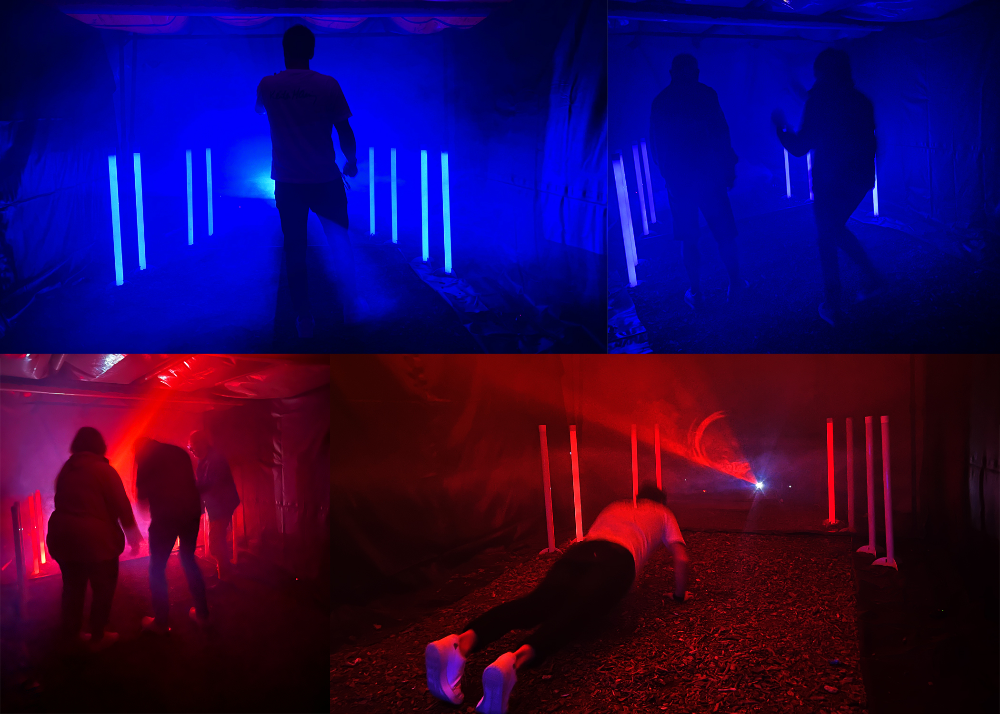
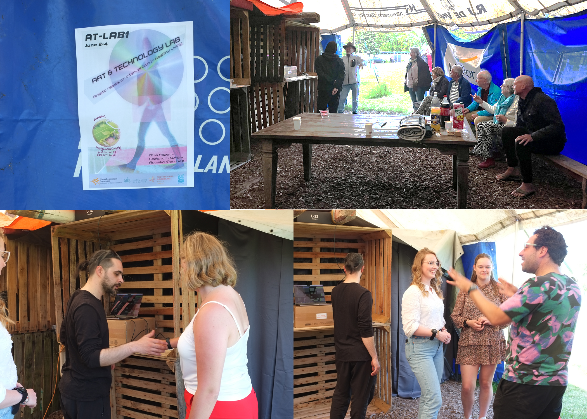
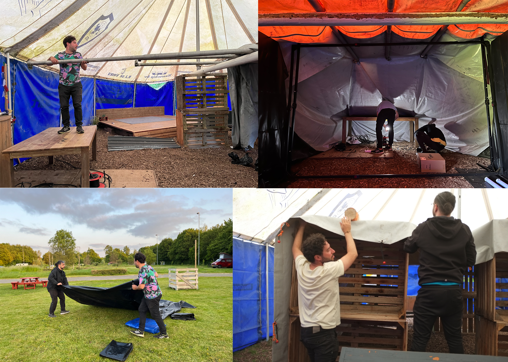

04 — Art & Technology Lab · Participatory Installation · Community Research
From the 2nd to the 4th of June 2023, inhabitants of the province of Groningen were invited to participate in Art & Technology LAB 1 at Stichting Landgoed de Camping in 't Zandt. Part of WP2 (Work Package 2) of the NWO-funded Healthy Living as a Service (HLaS) project, the AT-LAB was designed as a space mapped through technology and artistically intervened through sound, light, and choreography.
The lab created an optimal ground for artistic research on community building, technologically mediated interaction, digital literacy, and performative practice — bringing art and technology together in a purpose-built immersive environment open to the surrounding community.
Around 50 participants entered the custom-built space — interacting with light, sound, and visuals directly through the movement of sensors placed on their arms, and through the sensing of their heartbeat.
Participants controlled the movement, intensity, and parameters of the light and visuals simply by moving. Through their heartbeat, they experienced more subtle feedback in the sound and light environment. Finally, they shared thoughts on health sensors and their experience of interacting with technology — generating rich qualitative research data.

Installation, 't Zandt — light & movement
Workshop & community participantsSensors placed on participants' arms captured movement in real time. This movement directly controlled the direction, intensity, and other parameters of the light and projected visuals — giving each participant agency over the environment through gesture.
Through heartbeat sensing, participants experienced a more subtle layer of feedback in the sound and light. Their interior physiological state was made perceptible in the shared environment — the body as instrument, the heartbeat as signal.
Physical movement also controlled the sound and its parameters — participants created and shaped the sonic environment collectively, with each person's movement contributing to a shared soundscape that responded to the group in real time.
After participating, visitors shared their thoughts on health sensors and their experience of interacting with technology. This qualitative data forms part of the broader HLaS research into community health, digital literacy, and the role of art in healthy living.
AT-LAB I is part of WP2 (Sociale Mensen) of the Healthy Living as a Service (HLaS) project, a major NWO-funded research initiative led by Hanze Hogeschool in collaboration with UMCG and other partners. The project researches how to support healthy living in northern Netherlands communities, exploring the role of social connection, movement, technology, and the arts.
Agustín Martínez's involvement in HLaS extends across multiple activities: from the participatory AT-LAB format to presentations at international conferences (EASST/4S 2024 in Amsterdam) and the development of participatory AI design workshops such as Promptare!, presented at Placemaking Week Europe 2025 in Reggio Emilia.
AT-LAB I represents a model of artistic research as community intervention — not art delivered to a community, but art created with and through a community, generating knowledge about how technology is perceived, experienced, and integrated into embodied daily life.
Poster — SAR25 · 16th International Conference on Artistic Research · Faculty of Fine Arts, University of Porto · 7–9 May 2025
View on Research Catalogue ↗
Build & installation — Stichting Landgoed de Camping, 't Zandt